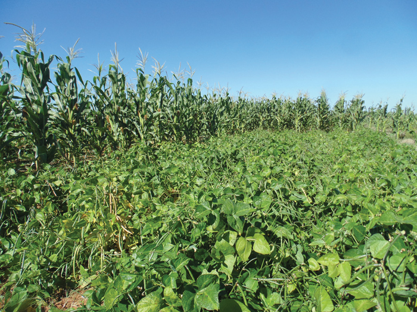
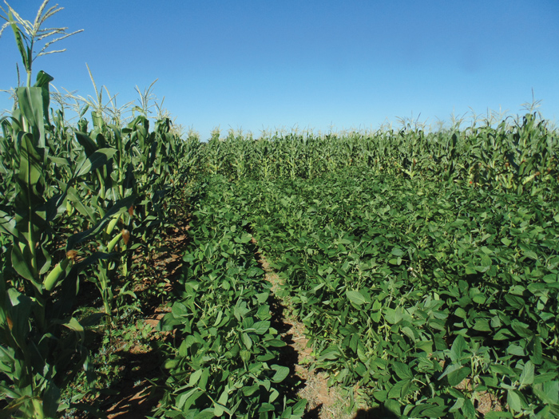
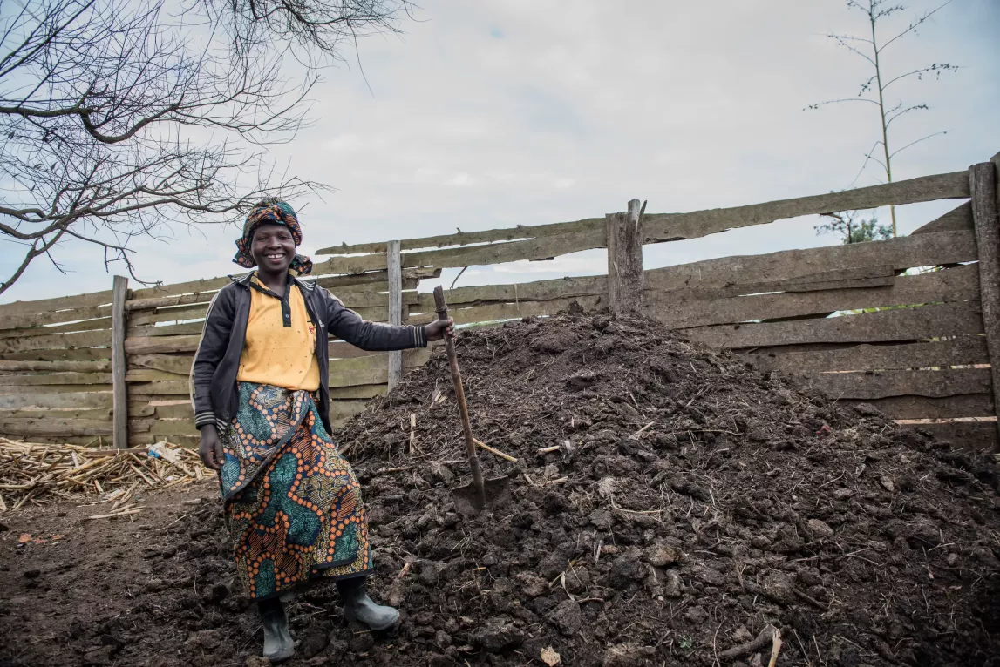
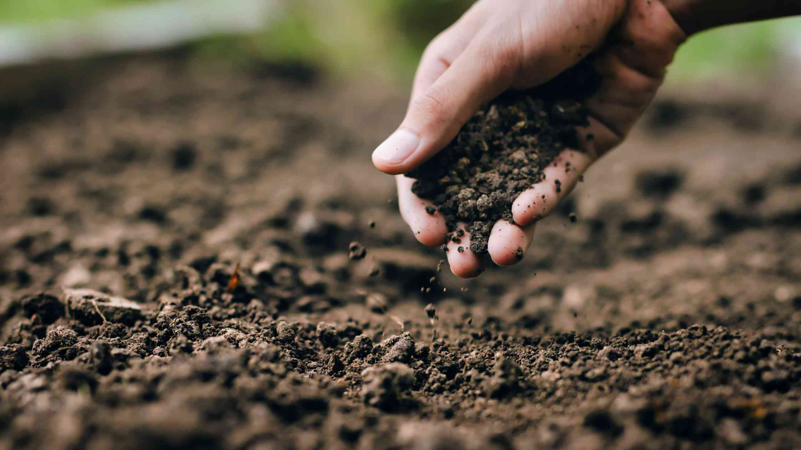
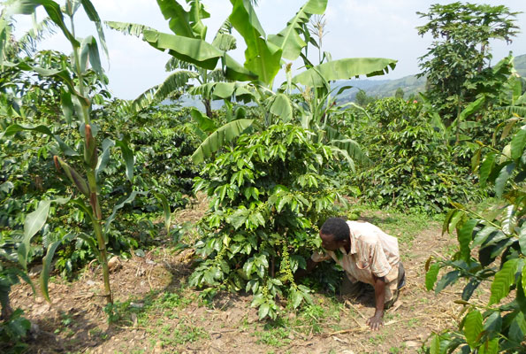
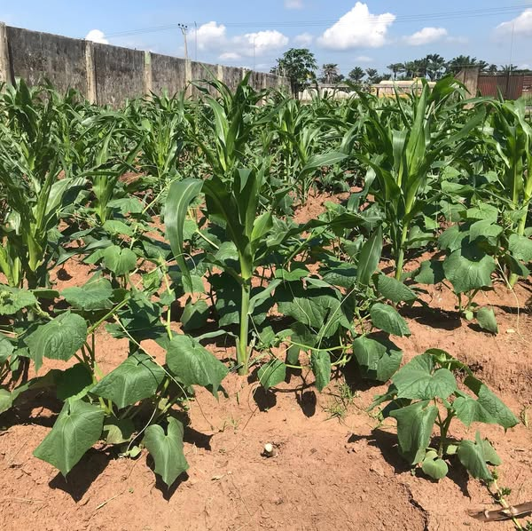
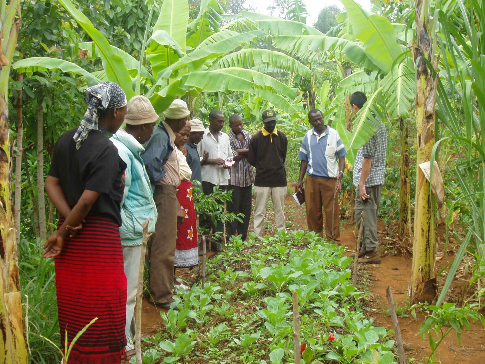
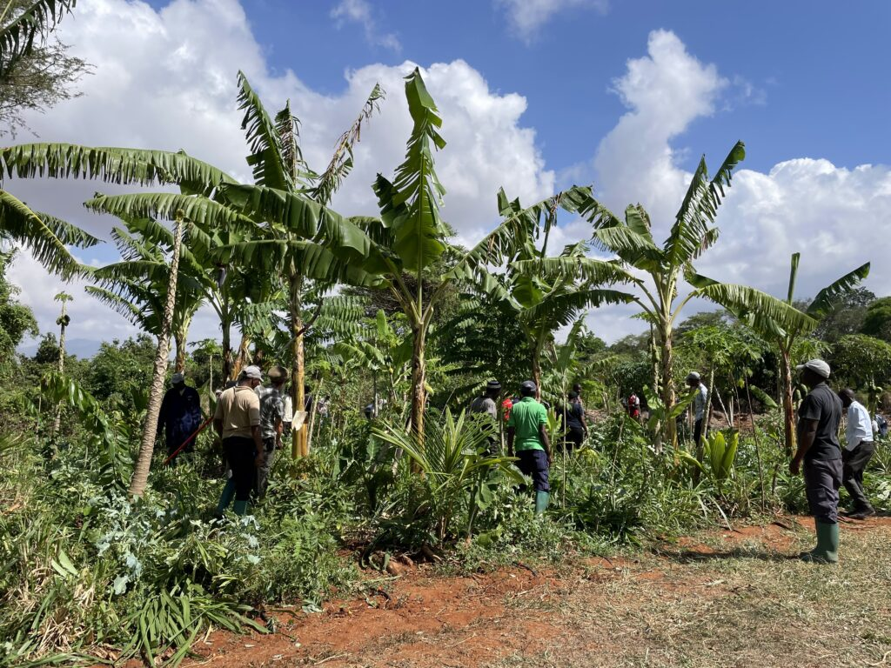

Badilisha mazao kama mahindi na maharage kila msimu ili kudumisha afya ya udongo na kupunguza wadudu kwa njia asili. Kwa mfano, panda mahindi mwaka huu katika sehemu moja ya shamba lako, kisha mwaka ujao panda maharage au karanga kwenye eneo lilelile. Njia hii inazuia wadudu na magonjwa yanayoshambulia mazao yale yale kila mwaka kujilimbikiza, kama vidukari vya mahindi. Pia inasaidia udongo wako kubaki imara kwa sababu mazao tofauti hutumia na kuongeza virutubisho tofauti - maharage, kwa mfano, huweka nitrojeni nyuma kwenye udongo, ambayo mahindi hupenda. Anza kwa kugawanya ardhi yako katika vipande vidogo na upange mzunguko rahisi: mahindi, kisha maharage, halafu labda mtama. Baada ya muda, utaona magugu machache, mimea yenye afya, na mavuno bora bila kuhitaji kemikali ghali!

Jifunze misingi ya mifumo bora ya mzunguko wa mazao.

Gundua jinsi mzunguko wa mahindi na mimea ya kunde unavyoboresha mavuno.
Ongeza mbolea au mboji kwenye udongo wako ili kuufanya uwe tajiri na kusaidia mimea yako kukua kwa nguvu na afya. Tumia mabaki kama maganda ya mboga, maganda ya ndizi, au mashina ya mahindi, na uchanganye na mavi ya ng'ombe, mbuzi, au kuku. Weka kwenye rundo mahali penye kivuli, weka unyevu kama nguo iliyokamuliwa, na ugeuze kila baada ya wiki chache kwa kijembe au jembe - itageuka kuwa mbolea nyeusi, yenye vipande vipande baada ya takriban miezi miwili. Tawanya hii juu ya mashamba yako kabla ya kupanda, au ichimbie kwenye udongo karibu na mazao yako. Hii inalisha mimea yako kwa njia asili, huhifadhi maji vizuri wakati wa ukame, na huzuia udongo wako kuwa mgumu na uchovu. Unaweza pia kuongeza majivu kutoka kwa moto wako ili kutoa virutubisho vya ziada kama potasiamu - mazao yako yatakushukuru kwa mavuno makubwa!

Jinsi upimaji wa udongo unavyowasaidia wakulima wadogo kuboresha afya ya udongo.

Kwa nini afya ya udongo ni muhimu kwa wakulima wadogo wa Tanzania.
Panda mazao mawili au zaidi pamoja, kama mahindi na maharage au mbaazi, ili kutumia vizuri zaidi ardhi yako na kuifanya ibaki na afya. Panda mahindi kwa safu, kisha ongeza maharage au mbaazi kati yao - mahindi hutoa kivuli na msaada, huku maharage yakiongeza nitrojeni kwenye udongo, na kufanya mazao ya mahindi yanayofuata kuwa bora zaidi. Hila hii pia huwachanganya wadudu, kwa hivyo hupoteza mazao machache kwa wadudu kama mende au viwavi. Jaribu kuweka mahindi umbali wa futi moja na maharage karibu kidogo, ukivipanda wakati mmoja baada ya mvua kuanza. Utaweza kuvuna mazao mawili kutoka shamba moja - mahindi kwa chakula na maharage ya kula au kuuza - pamoja na udongo wako ukibaki kufunikwa, na hivyo kupunguza magugu na mmomonyoko wa udongo. Ni kama kazi ya pamoja kwenye shamba lako!

Jifunze mbinu za kilimo cha mchanganyiko nchini Tanzania.

Gundua faida za mifumo ya kilimo cha mchanganyiko.
Panda miti pamoja na mazao yako au mifugo yako, kama mialoni, miembe, au mlonge kati ya mahindi yako au maharage, ili kuifanya shamba lako liwe na nguvu na lenye manufaa zaidi. Panda miti ya kukua haraka kando au kwa safu - kwa mfano, kila futi 10 - ili itoe kivuli kwa mazao yako na kuzuia udongo kufurika wakati wa mvua kubwa. Baada ya muda, majani yake yanaanguka na kuoza, na kulishe udongo kwa njia asili, huku mizizi ikaiweka imara dhidi ya upepo na maji. Pia utapata vitu vya ziada: kuni kutoka kwa matawi, matunda kama maembe ya kula au kuuza, au majani ya mlonge kwa mbuzi wako. Anza kwa kiasi kidogo - panda miti michache mwaka huu - uangalie ardhi yako ikiboreshwa huku ikikupa zaidi ya maisha!

Miradi ya kilimo cha misitu inayofanya mabadiliko Tanzania.

Mipango ya ubunifu ya kilimo cha misitu nchini Tanzania.